from pathlib import Path
import numpy as np
import matplotlib.pyplot as plt
from PIL import Image
from scipy import ndimage as ndi
from scipy.optimize import minimize
from scipy.spatial import cKDTree
from skimage.filters import threshold_otsu
from skimage import morphology as morf
from skimage.measure import label
plt.rcParams.update({"figure.dpi": 110, "savefig.dpi": 300,
"font.size": 10, "axes.titlesize": 11})
# El cuaderno se ejecuta desde notebooks/ o desde la raiz del proyecto.
RAIZ = Path("..") if Path("../figs").exists() else Path(".")
GZ = RAIZ / "figs" / "figs_gonzalez"
MRI = RAIZ / "figs" / "08-segm-II" / "mri"
FIGDIR = RAIZ / "figs" / "06-transf-geom"
GUARDAR = FIGDIR.exists() # las laminas leen las figuras desde ahi
def gonzalez(nombre):
"""Carga una imagen del capitulo 2 del material de Gonzalez y Woods."""
img = Image.open(GZ / "DIP3E_Original_Images_CH02" / nombre)
return np.array(img.convert("L")).astype(float)
def mri(nombre):
return np.array(Image.open(MRI / nombre).convert("L")).astype(float)
def mostrar(imagenes, titulos, ncol=None, ancho=3.0, alto=None, cmap="gray",
vmin=None, vmax=None, nombre=None):
"""Muestra una lista de imagenes en una fila (o varias) con sus titulos."""
n = len(imagenes)
ncol = ncol or n
nfil = int(np.ceil(n / ncol))
h0, w0 = imagenes[0].shape[:2]
alto = alto or ancho * h0 / w0
fig, axs = plt.subplots(nfil, ncol, figsize=(ancho * ncol, alto * nfil),
squeeze=False)
for ax in axs.ravel():
ax.axis("off")
for ax, im, t in zip(axs.ravel(), imagenes, titulos):
ax.imshow(im, cmap=cmap, vmin=vmin, vmax=vmax, interpolation="nearest")
ax.set_title(t)
plt.tight_layout()
if nombre and GUARDAR:
fig.savefig(FIGDIR / nombre, bbox_inches="tight")
return fig, axs
def guardar(fig, nombre):
if GUARDAR:
fig.savefig(FIGDIR / nombre, bbox_inches="tight")Transformaciones geométricas y registro: cuaderno de ejemplos
Procesamiento de imágenes médicas, Alejandro Veloz.
Este cuaderno acompaña la clase 06 y reproduce, método por método, los ejemplos de las láminas. Cada sección tiene la misma estructura: la definición en una o dos líneas, el código que la implementa y una figura con el resultado sobre una imagen real. Las imágenes provienen del material del libro de Gonzalez y Woods (Digital Image Processing, 3a edición, capítulo 2) y del caso clínico de glioblastoma usado en las clases de segmentación (cortes axiales T1 con contraste, T1 FLAIR y T2 FLAIR, ya alineados entre sí).
Contenido
- Preparación: transformaciones afines en coordenadas homogéneas y mapeo inverso implementados a mano.
- Mapeo directo frente a mapeo inverso.
- Interpolación: vecino más cercano, bilineal y bicúbica.
- Transformaciones afines básicas y su composición.
- Transformaciones no rígidas: campos de desplazamiento.
- Registro basado en puntos (solución cerrada de Procrustes).
- Registro basado en superficies (ICP sobre contornos).
- Registro basado en intensidad: SSD, correlación e información mutua.
- Optimización y estrategia multirresolución.
- Aplicación. Registro rígido multimodal T2 FLAIR sobre T1 con contraste.
Requisitos: numpy, scipy, scikit-image, matplotlib y Pillow.
1. Transformaciones afines en coordenadas homogéneas
Una transformación geométrica cambia las coordenadas de los píxeles y no sus intensidades. Un punto \((x, y)\) de la imagen de entrada va a parar a \((x', y') = T(x, y)\). En coordenadas homogéneas \((x, y, 1)\) toda transformación afín es una matriz de \(3\times 3\) y la composición es un producto de matrices. Usamos la convención \(x\) = columna, \(y\) = fila, con origen en la esquina superior izquierda.
def T_traslacion(tx, ty):
return np.array([[1, 0, tx], [0, 1, ty], [0, 0, 1]], float)
def T_escala(sx, sy=None):
sy = sx if sy is None else sy
return np.array([[sx, 0, 0], [0, sy, 0], [0, 0, 1]], float)
def T_rotacion(grados):
t = np.deg2rad(grados)
return np.array([[np.cos(t), -np.sin(t), 0],
[np.sin(t), np.cos(t), 0],
[0, 0, 1]], float)
def T_cizalla(cx=0.0, cy=0.0):
return np.array([[1, cx, 0], [cy, 1, 0], [0, 0, 1]], float)
def en_el_centro(M, forma):
"""Conjuga M para que actue respecto del centro de una imagen de esa forma."""
cy, cx = (np.array(forma[:2]) - 1) / 2
return T_traslacion(cx, cy) @ M @ T_traslacion(-cx, -cy)
def T_rigida(grados, tx, ty, forma):
"""Rotacion alrededor del centro seguida de una traslacion."""
return T_traslacion(tx, ty) @ en_el_centro(T_rotacion(grados), forma)Mapeo inverso
El algoritmo recorre los píxeles de la imagen de salida. Para cada \((x', y')\) calcula el punto de origen \((x, y) = T^{-1}(x', y')\), que en general no cae sobre un píxel, y obtiene la intensidad por interpolación de los píxeles vecinos. scipy.ndimage.map_coordinates hace la interpolación con splines de orden 0 (vecino más cercano), 1 (bilineal) o 3 (bicúbica).
def aplicar(img, M, orden=1, forma=None):
"""Aplica la transformacion M (coordenadas homogeneas, x=columna, y=fila)
por mapeo inverso. La salida tiene la forma indicada o la de la entrada."""
forma = img.shape if forma is None else forma
ys, xs = np.mgrid[0:forma[0], 0:forma[1]]
P = np.stack([xs.ravel(), ys.ravel(), np.ones(xs.size)])
Q = np.linalg.inv(M) @ P # (x, y, 1) de origen
salida = ndi.map_coordinates(img, [Q[1], Q[0]], order=orden,
mode="constant", cval=0.0, prefilter=orden > 1)
return salida.reshape(forma)
def mapeo_directo(img, M, forma=None):
"""Mapeo directo (solo para ilustrar): cada pixel de entrada se envia a la
posicion redondeada de salida. Deja huecos y colisiones."""
forma = img.shape if forma is None else forma
ys, xs = np.mgrid[0:img.shape[0], 0:img.shape[1]]
P = np.stack([xs.ravel(), ys.ravel(), np.ones(xs.size)])
Q = np.rint(M @ P).astype(int)
ok = (Q[0] >= 0) & (Q[0] < forma[1]) & (Q[1] >= 0) & (Q[1] < forma[0])
salida = np.zeros(forma)
salida[Q[1][ok], Q[0][ok]] = img.ravel()[ok]
return salida2. Mapeo directo frente a mapeo inverso
Las dos rejillas de la figura muestran el problema. Si la transformación desplaza la rejilla de entrada una cantidad no entera, los puntos de salida caen entre píxeles de entrada y hay que decidir qué intensidad asignarles.
fig, axs = plt.subplots(1, 3, figsize=(10.5, 3.6))
n = 5
gy, gx = np.mgrid[0:n, 0:n]
for ax, (dx, dy), titulo in zip(axs, [(0, 0), (1, 2), (1.25, 2.75)],
["Identidad", "Traslación entera (1, 2)",
"Traslación no entera (1,25, 2,75)"]):
ax.scatter(gx, gy, s=60, c="#c0392b", label="Píxeles de entrada", zorder=3)
ax.scatter(gx + dx, gy + dy, s=36, c="#e67e22", marker="s",
label="Píxeles de salida", zorder=4)
for k in range(n):
ax.plot([0, n - 1], [k, k], ":", c="#c0392b", lw=0.8)
ax.plot([k, k], [0, n - 1], ":", c="#c0392b", lw=0.8)
ax.plot([dx, dx + n - 1], [k + dy, k + dy], ":", c="#e67e22", lw=0.8)
ax.plot([k + dx, k + dx], [dy, dy + n - 1], ":", c="#e67e22", lw=0.8)
ax.set_aspect("equal")
ax.invert_yaxis()
ax.set_title(titulo)
ax.set_xlabel("$x$")
ax.set_ylabel("$y$")
axs[0].legend(loc="lower right", fontsize=8)
# detalle del ultimo panel: un punto de salida y sus cuatro vecinos de entrada
ax = axs[2]
x0, y0 = 2 + 1.25, 1 + 2.75
ax.add_patch(plt.Rectangle((3, 3), 1, 1, fill=False, ec="#2c3e50", lw=2))
for (xx, yy, lab) in [(3, 3, "$I_1$"), (4, 3, "$I_2$"), (3, 4, "$I_3$"), (4, 4, "$I_4$")]:
ax.annotate(lab, (xx, yy), xytext=(4, -10), textcoords="offset points",
fontsize=9, color="#2c3e50")
ax.scatter([x0], [y0], s=90, c="#2c3e50", marker="s", zorder=5)
plt.tight_layout()
guardar(fig, "mapeo_rejillas.png")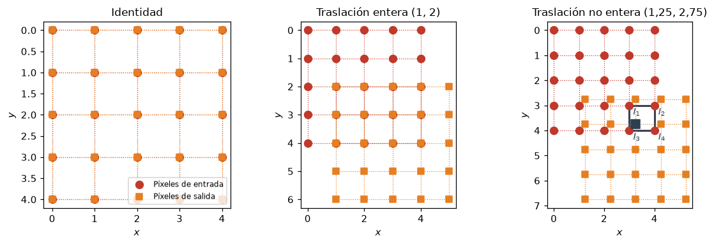
Con una rotación y un cambio de escala, el mapeo directo (enviar cada píxel de entrada a su posición de salida redondeada) deja huecos y superpone píxeles. El mapeo inverso recorre la salida y nunca deja huecos.
T = gonzalez("Fig0236(a)(letter_T).tif")
M = en_el_centro(T_rotacion(21) @ T_escala(1.3), T.shape)
directo = mapeo_directo(T, M)
inverso = aplicar(T, M, orden=0)
r = (slice(90, 190), slice(230, 330))
fig, axs = mostrar([T, directo, inverso, directo[r], inverso[r]],
["Original", "Mapeo directo", "Mapeo inverso",
"Detalle, mapeo directo", "Detalle, mapeo inverso"],
ncol=5, ancho=2.6, nombre="mapeo_directo_inverso.png")
print(f"huecos dentro del objeto por mapeo directo: "
f"{int(((directo == 0) & (inverso > 0)).sum())} píxeles")huecos dentro del objeto por mapeo directo: 14007 píxeles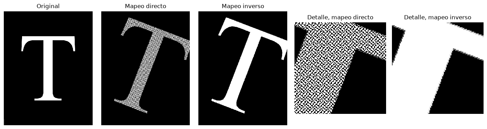
3. Interpolación
El punto de origen \((x, y)\) cae entre cuatro píxeles. El vecino más cercano copia el valor del píxel más próximo. La interpolación bilineal pondera los cuatro vecinos con pesos que dependen de la distancia a cada uno, \[ J(x', y') = (1-a)(1-b)\,I_1 + a(1-b)\,I_2 + (1-a)\,b\,I_3 + a\,b\,I_4, \] con \(a = x - \lfloor x\rfloor\) y \(b = y - \lfloor y\rfloor\). La bicúbica usa dieciséis vecinos y un kernel cúbico. En una dimensión, cada método equivale a convolver las muestras con un kernel distinto.
def kernel_cubico(s, a=-0.5):
s = np.abs(s)
k = np.where(s <= 1, (a + 2) * s**3 - (a + 3) * s**2 + 1,
np.where(s < 2, a * s**3 - 5 * a * s**2 + 8 * a * s - 4 * a, 0.0))
return k
s = np.linspace(-2.5, 2.5, 501)
kernels = {"Vecino más cercano": (np.abs(s) <= 0.5).astype(float),
"Lineal": np.clip(1 - np.abs(s), 0, None),
"Cúbico": kernel_cubico(s)}
rng = np.random.default_rng(1)
xm = np.arange(8)
ym = np.array([2, 3, 6, 5, 1, 2, 4, 3.5])
xf = np.linspace(0, 7, 701)
fig, axs = plt.subplots(1, 2, figsize=(10, 3.4))
for nombre, k in kernels.items():
axs[0].plot(s, k, label=nombre)
axs[0].set_title("Kernels de interpolación en una dimensión")
axs[0].set_xlabel("Distancia a la muestra (píxeles)")
axs[0].legend(fontsize=8)
for nombre, orden in [("Vecino más cercano", 0), ("Lineal", 1), ("Cúbico", 3)]:
yf = ndi.map_coordinates(ym, [xf], order=orden, mode="nearest")
axs[1].plot(xf, yf, label=nombre)
axs[1].plot(xm, ym, "ko", label="Muestras")
axs[1].set_title("Interpolación de ocho muestras")
axs[1].set_xlabel("$x$")
axs[1].legend(fontsize=8)
plt.tight_layout()
guardar(fig, "interpolacion_kernels.png")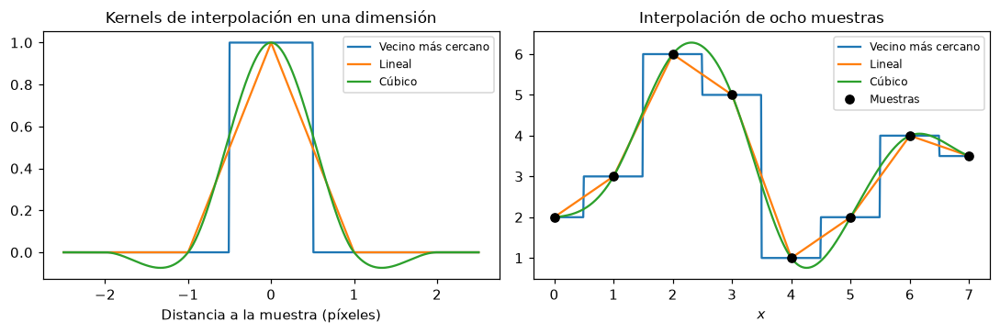
Ejemplo: rotación de una letra con los tres interpoladores
La letra T de Gonzalez y Woods (figura 2.36) rotada 21 grados alrededor de su centro. El vecino más cercano produce bordes dentados, la bilineal los suaviza y la bicúbica conserva mejor la nitidez de la transición.
M = en_el_centro(T_rotacion(21), T.shape)
rot = [aplicar(T, M, orden=o) for o in (0, 1, 3)]
r = (slice(120, 170), slice(180, 230))
fig, axs = mostrar([T] + rot + [T[r]] + [im[r] for im in rot],
["Original", "Vecino más cercano", "Bilineal", "Bicúbica",
"Detalle", "Detalle", "Detalle", "Detalle"],
ncol=4, ancho=2.6, vmin=0, vmax=255,
nombre="ej_interpolacion_T.png")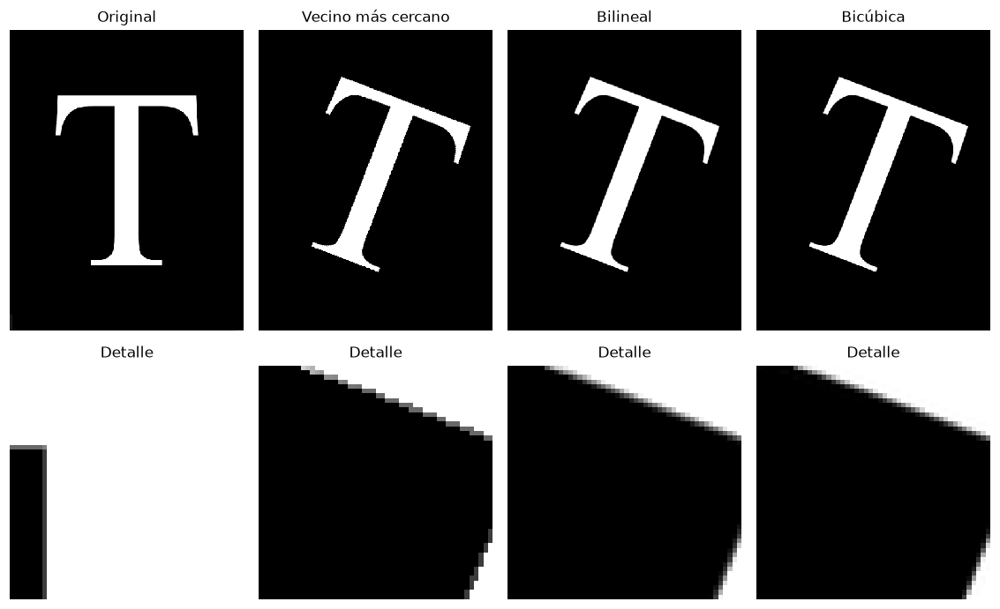
Ejemplo: ampliación de una ventana de MRI
Un recorte de \(48\times48\) píxeles alrededor del tumor en la T1 con contraste se amplía cuatro veces. Al ampliar, la mayoría de los píxeles de salida no tiene un píxel de entrada que coincida, y el interpolador decide su valor.
t1c = mri("IM17_axt1c.tiff")
flair = mri("IM17_axt2FLAIR.tiff")
t1f = mri("IM17_axt1FLAIR.tiff")
ventana = t1c[300:348, 300:348]
M4 = T_escala(4)
amp = [aplicar(ventana, M4, orden=o, forma=(192, 192)) for o in (0, 1, 3)]
fig, axs = mostrar([ventana] + amp,
["Ventana original", "Vecino más cercano ×4",
"Bilineal ×4", "Bicúbica ×4"],
ancho=2.8, vmin=0, vmax=255, nombre="ej_interpolacion_mri.png")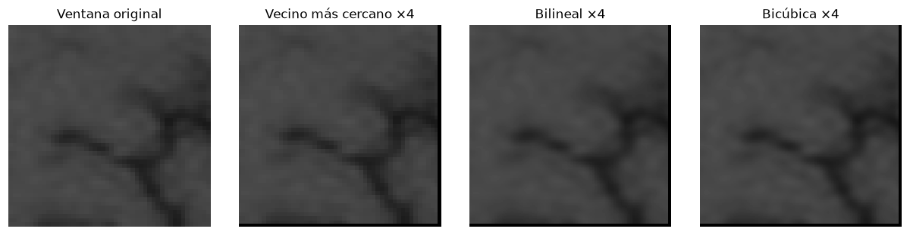
Ejemplo numérico
El punto de origen es \((x, y) = (2{,}3,\; 5{,}6)\). Sus cuatro vecinos y sus valores son \(I(2,5) = 10\), \(I(3,5) = 20\), \(I(2,6) = 30\) e \(I(3,6) = 40\), y las partes fraccionarias son \(a = 0{,}3\) y \(b = 0{,}6\).
- Vecino más cercano: el píxel más próximo es \((2, 6)\), de modo que el resultado es \(30\).
- Bilineal: \(0{,}7\cdot 0{,}4\cdot 10 + 0{,}3\cdot 0{,}4\cdot 20 + 0{,}7\cdot 0{,}6\cdot 30 + 0{,}3\cdot 0{,}6\cdot 40 = 2{,}8 + 2{,}4 + 12{,}6 + 7{,}2 = 25\).
map_coordinates reproduce ambos resultados.
I = np.zeros((8, 8))
I[5, 2], I[5, 3], I[6, 2], I[6, 3] = 10, 20, 30, 40 # I[fila, columna] = I(x, y)
x, y = 2.3, 5.6
a, b = x - np.floor(x), y - np.floor(y)
bilineal = (1 - a) * (1 - b) * I[5, 2] + a * (1 - b) * I[5, 3] \
+ (1 - a) * b * I[6, 2] + a * b * I[6, 3]
print(f"a = {a:.1f}, b = {b:.1f}")
print(f"vecino más cercano: {ndi.map_coordinates(I, [[y], [x]], order=0)[0]:.0f}")
print(f"bilineal a mano: {bilineal:.1f}, "
f"map_coordinates: {ndi.map_coordinates(I, [[y], [x]], order=1)[0]:.1f}")
fig, axs = plt.subplots(1, 2, figsize=(7.2, 3.4))
for ax, titulo, valor in zip(axs, ["Vecino más cercano", "Bilineal"], [30, 25]):
for (xx, yy, v) in [(2, 5, 10), (3, 5, 20), (2, 6, 30), (3, 6, 40)]:
peso = {(2, 5): (1 - a) * (1 - b), (3, 5): a * (1 - b),
(2, 6): (1 - a) * b, (3, 6): a * b}[(xx, yy)]
cara = "#f6c8a8" if (titulo == "Bilineal") else ("#f6c8a8" if (xx, yy) == (2, 6) else "white")
ax.add_patch(plt.Rectangle((xx - 0.5, yy - 0.5), 1, 1, facecolor=cara,
edgecolor="0.4"))
arriba = yy == 5 # etiquetas lejos del punto
ax.text(xx, yy - 0.34 if arriba else yy + 0.40, f"$I({xx},{yy}) = {v}$",
ha="center", fontsize=9)
if titulo == "Bilineal":
ax.text(xx, yy - 0.16 if arriba else yy + 0.22,
"peso " + f"{peso:.2f}".replace(".", ","),
ha="center", fontsize=8, color="0.3")
ax.plot([x], [y], "o", color="#c0392b", ms=7)
ax.annotate("$(2{,}3,\\ 5{,}6)$", (x, y), xytext=(7, -9), textcoords="offset points",
color="#c0392b", fontsize=9)
ax.plot([2, x], [y, y], ":", color="0.4")
ax.plot([x, x], [5, y], ":", color="0.4")
ax.text((2 + x) / 2, y - 0.07, "$a = 0{,}3$", ha="center", fontsize=8)
ax.text(x - 0.05, (5 + y) / 2, "$b = 0{,}6$", va="center", ha="right", fontsize=8)
ax.set_xlim(1.4, 3.6)
ax.set_ylim(6.6, 4.4)
ax.set_xticks([2, 3])
ax.set_yticks([5, 6])
ax.set_xlabel("$x$")
ax.set_ylabel("$y$")
ax.set_aspect("equal")
ax.set_title(f"{titulo}: resultado {valor}")
plt.tight_layout()
guardar(fig, "ej_interpolacion_numerica.png")a = 0.3, b = 0.6
vecino más cercano: 30
bilineal a mano: 25.0, map_coordinates: 25.0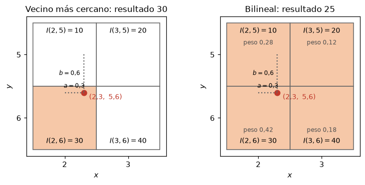
Interpolación de un mapa de etiquetas
Una parcelación asigna a cada vóxel un número entero que identifica una región anatómica. Al llevar la parcelación a otra rejilla, la interpolación bilineal promedia etiquetas vecinas y produce números que no corresponden a ninguna región. El vecino más cercano conserva el conjunto de etiquetas. Se usa un corte axial del atlas AAL3 sobre la plantilla MNI152; si el atlas no está disponible se lee la copia guardada en notebooks/datos/aal3_corte.npz.
AAL3 = Path.home() / "codes" / "parcellation" / "atlas" / "AAL3" / "AAL3v1_1mm.nii"
COPIA = RAIZ / "notebooks" / "datos" / "aal3_corte.npz"
if AAL3.exists():
import nibabel as nib
from nilearn.datasets import load_mni152_template
vol = nib.load(AAL3).get_fdata()
mni = load_mni152_template(resolution=1).get_fdata()
z = 80
atlas = vol[:, :, z].T[::-1].copy() # fila = y, columna = x
plantilla = mni[8:8 + vol.shape[0], 8:8 + vol.shape[1], z].T[::-1].copy()
COPIA.parent.mkdir(exist_ok=True)
np.savez_compressed(COPIA, atlas=atlas, plantilla=plantilla)
else:
d = np.load(COPIA)
atlas, plantilla = d["atlas"], d["plantilla"]
plantilla = 255 * plantilla / plantilla.max()
M = en_el_centro(T_rotacion(15) @ T_escala(1.2), atlas.shape)
vecino = aplicar(atlas, M, orden=0)
bilin = aplicar(atlas, M, orden=1)
etiquetas = set(np.unique(atlas))
nuevas = ~np.isin(bilin, list(etiquetas)) & (bilin > 0)
print(f"etiquetas en el corte: {len(etiquetas) - 1}; "
f"con vecino más cercano: {len(np.unique(vecino)) - 1}; "
f"con bilineal: {len(np.unique(bilin)) - 1} valores distintos, "
f"{100 * nuevas.sum() / (bilin > 0).sum():.1f} % de los píxeles con un valor que no es etiqueta")
# colores categoricos, con permutacion fija para que regiones vecinas difieran
rng = np.random.default_rng(2)
perm = rng.permutation(int(atlas.max()) + 1)
def colorear(lab):
lab = np.rint(lab).astype(int)
return np.where(lab > 0, perm[np.clip(lab, 0, len(perm) - 1)], np.nan)
r = (slice(60, 110), slice(50, 100))
fig, axs = plt.subplots(1, 5, figsize=(15, 3.4))
for ax in axs:
ax.axis("off")
axs[0].imshow(plantilla, cmap="gray")
axs[0].set_title("Plantilla MNI152")
axs[1].imshow(plantilla, cmap="gray")
axs[1].imshow(colorear(atlas), cmap="nipy_spectral", alpha=0.75, interpolation="nearest")
axs[1].set_title("Parcelación AAL3")
axs[2].imshow(aplicar(plantilla, M), cmap="gray")
axs[2].imshow(colorear(vecino), cmap="nipy_spectral", alpha=0.75, interpolation="nearest")
axs[2].set_title("Rotada y ampliada, vecino más cercano")
axs[3].imshow(bilin[r], cmap="nipy_spectral", vmin=0, vmax=atlas.max(), interpolation="nearest")
axs[3].set_title("Detalle con bilineal, valores")
axs[4].imshow(np.where(bilin[r] > 0, nuevas[r], np.nan), cmap="Reds", vmin=0, vmax=1,
interpolation="nearest")
axs[4].set_title("En rojo, valores que no son etiqueta")
plt.tight_layout()
guardar(fig, "ej_parcelacion_vecino.png")etiquetas en el corte: 63; con vecino más cercano: 63; con bilineal: 5077 valores distintos, 23.2 % de los píxeles con un valor que no es etiqueta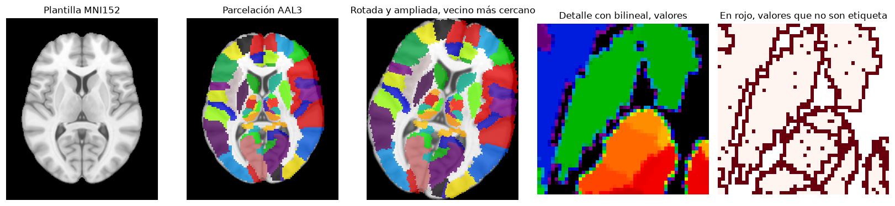
4. Transformaciones afines básicas
Las seis transformaciones de la tabla 2.2 de Gonzalez y Woods, aplicadas alrededor del centro de la imagen por mapeo inverso con interpolación bilineal. La afín general tiene seis parámetros y contiene a todas las demás.
Mafin = np.array([[1.1, 0.25, 30], [-0.15, 0.9, 10], [0, 0, 1]])
transf = [("Identidad", np.eye(3)),
("Traslación (40, 25)", T_traslacion(40, 25)),
("Escalamiento (1,3, 0,8)", T_escala(1.3, 0.8)),
("Rotación 30°", T_rotacion(30)),
("Cizalla horizontal 0,4", T_cizalla(cx=0.4)),
("Afín general", Mafin)]
imgs = [aplicar(t1c, en_el_centro(M, t1c.shape)) for _, M in transf]
fig, axs = mostrar(imgs, [n for n, _ in transf], ncol=6, ancho=2.2,
vmin=0, vmax=255, nombre="afines_mri.png")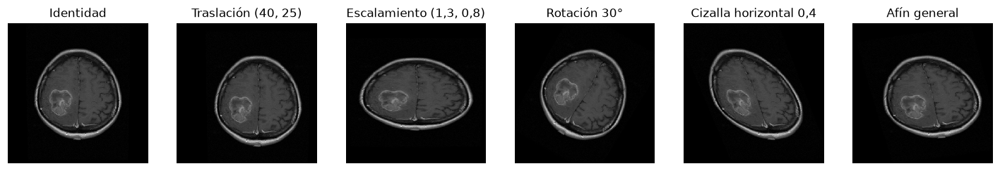
Composición y orden de las operaciones
Las matrices no conmutan. Rotar alrededor del origen (esquina superior izquierda) saca parte de la imagen del campo de vista; para rotar alrededor del centro \(c\) se compone \(T(c)\,R\,T(-c)\): llevar el centro al origen, rotar y devolverlo.
R = T_rotacion(30)
imgs = [aplicar(t1c, R), aplicar(t1c, en_el_centro(R, t1c.shape)),
aplicar(t1c, T_traslacion(60, 0) @ en_el_centro(R, t1c.shape)),
aplicar(t1c, en_el_centro(R, t1c.shape) @ T_traslacion(60, 0))]
fig, axs = mostrar(imgs, ["$R$, alrededor del origen", "$T(c)\\,R\\,T(-c)$",
"Traslación después de rotar",
"Rotación después de trasladar"],
ancho=2.7, vmin=0, vmax=255, nombre="rotacion_centro.png")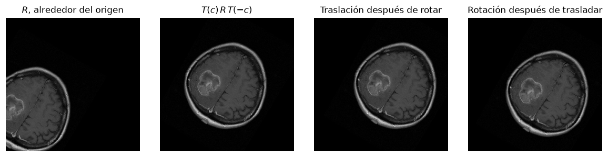
5. Transformaciones no rígidas
Una transformación no rígida asigna a cada píxel su propio desplazamiento, \((x', y') = (x + u(x, y),\; y + v(x, y))\). El campo \((u, v)\) debe ser suave para que la imagen no se rompa; aquí se construye como una suma de bultos gaussianos. La rejilla deformada muestra el campo, y la MRI deformada muestra el efecto sobre la anatomía.
def campo_suave(forma, amplitud=10, sigma=35, n=12, semilla=3):
rng = np.random.default_rng(semilla)
u = np.zeros(forma)
v = np.zeros(forma)
for _ in range(n):
yy, xx = rng.integers(60, forma[0] - 60, 2)
u[yy, xx] += rng.normal()
v[yy, xx] += rng.normal()
u = ndi.gaussian_filter(u, sigma)
v = ndi.gaussian_filter(v, sigma)
k = amplitud / max(np.abs(u).max(), np.abs(v).max())
return k * u, k * v
def aplicar_campo(img, u, v, orden=1):
"""Mapeo inverso con un campo de desplazamiento: el pixel de salida (x', y')
toma su valor de (x' - u, y' - v)."""
ys, xs = np.mgrid[0:img.shape[0], 0:img.shape[1]]
return ndi.map_coordinates(img, [ys - v, xs - u], order=orden, mode="constant")
u, v = campo_suave(t1c.shape, amplitud=12)
rejilla = np.zeros(t1c.shape)
rejilla[::24, :] = 255
rejilla[:, ::24] = 255
fig, axs = plt.subplots(1, 4, figsize=(12, 3.3))
for ax in axs:
ax.axis("off")
axs[0].imshow(t1c, cmap="gray")
axs[0].set_title("T1 con contraste")
paso = 24
yy, xx = np.mgrid[paso // 2:t1c.shape[0]:paso, paso // 2:t1c.shape[1]:paso]
axs[1].imshow(np.zeros_like(t1c), cmap="gray")
axs[1].quiver(xx, yy, u[yy, xx], -v[yy, xx], color="w", scale=200, width=0.004)
axs[1].set_title("Campo de desplazamiento $(u, v)$")
axs[2].imshow(aplicar_campo(rejilla, u, v, orden=0), cmap="gray")
axs[2].set_title("Rejilla deformada")
axs[3].imshow(aplicar_campo(t1c, u, v), cmap="gray")
axs[3].set_title("MRI deformada")
plt.tight_layout()
guardar(fig, "no_rigida.png")
print(f"desplazamiento máximo: {np.hypot(u, v).max():.1f} píxeles")desplazamiento máximo: 12.2 píxeles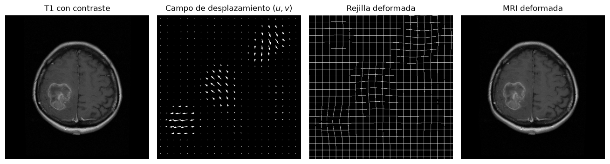
6. Registro basado en puntos
Dadas \(n\) parejas de puntos correspondientes \(p_i\) (imagen móvil) y \(q_i\) (imagen fija), la transformación rígida que minimiza \(\sum_i \|R\,p_i + t - q_i\|^2\) tiene solución cerrada (Procrustes ortogonal, algoritmo de Kabsch): se centran los dos conjuntos, se calcula la descomposición en valores singulares de la matriz de covarianza cruzada \(H = \sum_i (p_i - \bar p)(q_i - \bar q)^{\mathsf T} = U S V^{\mathsf T}\), y \(R = V U^{\mathsf T}\), \(t = \bar q - R\,\bar p\). El error residual sobre los puntos usados se llama error de registro de los fiduciales (FRE); el error en un punto de interés que no participó del ajuste se llama error de registro del objetivo (TRE).
Las máscaras de cerebro y de lesión de la T1c se obtienen con el umbral de Otsu y la secuencia morfológica de la clase anterior; sirven para medir el error y, más adelante, para el registro por contornos.
def mascara_cerebro(img):
m = img > threshold_otsu(img)
m = morf.opening(m, morf.disk(4))
et = label(m)
m = et == np.argmax(np.bincount(et.ravel())[1:]) + 1
return ndi.binary_fill_holes(m)
def mascara_lesion(img, cerebro):
m = (img > 80) & cerebro
m = morf.opening(m, morf.disk(2))
et = label(m)
m = et == np.argmax(np.bincount(et.ravel())[1:]) + 1
return ndi.binary_fill_holes(morf.closing(m, morf.disk(7)))
cerebro = mascara_cerebro(t1c)
lesion = mascara_lesion(t1c, cerebro)
def error_medio(M_est, M_true, mascara):
"""Desplazamiento medio, en pixeles, que la composicion M_est M_true deja
sobre los puntos de la mascara (cero si el registro es exacto)."""
ys, xs = np.nonzero(mascara)
P = np.stack([xs, ys, np.ones(xs.size)])
Q = M_est @ M_true @ P
return np.hypot(Q[0] - xs, Q[1] - ys).mean()
def kabsch(P, Q):
"""Rotacion R y traslacion t (2D) que llevan los puntos P sobre Q en el
sentido de minimos cuadrados. P y Q son arreglos (n, 2) con columnas x, y."""
pm, qm = P.mean(0), Q.mean(0)
H = (P - pm).T @ (Q - qm)
U, S, Vt = np.linalg.svd(H)
d = np.sign(np.linalg.det(Vt.T @ U.T))
R = Vt.T @ np.diag([1, d]) @ U.T
t = qm - R @ pm
return R, t
def matriz_de(R, t):
M = np.eye(3)
M[:2, :2] = R
M[:2, 2] = t
return M
# marcas sobre estructuras visibles de la T1c (x, y)
marcas = np.array([[256, 60], [150, 150], [362, 150], [256, 262],
[170, 380], [340, 380], [318, 330]], float)
M_true = T_rigida(14, 22, -15, t1c.shape) # transformacion desconocida
movil = aplicar(t1c, M_true)
rng = np.random.default_rng(0)
marcas_movil = (M_true @ np.c_[marcas, np.ones(len(marcas))].T)[:2].T
marcas_movil += rng.normal(0, 2.0, marcas_movil.shape) # error de localizacion
R, t = kabsch(marcas_movil, marcas)
M_est = matriz_de(R, t)
registrada = aplicar(movil, M_est)
ajustadas = (M_est @ np.c_[marcas_movil, np.ones(len(marcas))].T)[:2].T
FRE = np.sqrt(((ajustadas - marcas) ** 2).sum(1).mean())
ang = np.rad2deg(np.arctan2(R[1, 0], R[0, 0]))
# TRE en el centroide de la lesion, que no participo del ajuste
cy_l, cx_l = ndi.center_of_mass(lesion)
objetivo_fijo = np.array([cx_l, cy_l, 1.0])
objetivo_movil = M_true @ objetivo_fijo
TRE = np.linalg.norm((M_est @ objetivo_movil)[:2] - objetivo_fijo[:2])
print(f"ángulo estimado {ang:.2f}° (verdadero -14°), FRE = {FRE:.2f} px, "
f"TRE en la lesión = {TRE:.2f} px, "
f"error medio en el cerebro {error_medio(M_est, M_true, cerebro):.2f} px")
fig, axs = plt.subplots(1, 3, figsize=(10.5, 3.7))
for ax in axs:
ax.axis("off")
axs[0].imshow(t1c, cmap="gray")
axs[0].plot(marcas[:, 0], marcas[:, 1], "o", mfc="none", mec="#e74c3c", ms=9, mew=2)
axs[0].set_title("Imagen fija $q_i$")
axs[1].imshow(movil, cmap="gray")
axs[1].plot(marcas_movil[:, 0], marcas_movil[:, 1], "s", mfc="none", mec="#3498db",
ms=9, mew=2)
axs[1].set_title("Imagen móvil $p_i$")
axs[2].imshow(registrada, cmap="gray")
axs[2].plot(marcas[:, 0], marcas[:, 1], "o", mfc="none", mec="#e74c3c", ms=9, mew=2)
axs[2].plot(ajustadas[:, 0], ajustadas[:, 1], "s", mfc="none", mec="#3498db", ms=9, mew=2)
axs[2].set_title(f"Móvil registrada, FRE = {FRE:.1f} px")
plt.tight_layout()
guardar(fig, "puntos_landmarks.png")ángulo estimado -14.51° (verdadero -14°), FRE = 2.15 px, TRE en la lesión = 1.10 px, error medio en el cerebro 0.99 px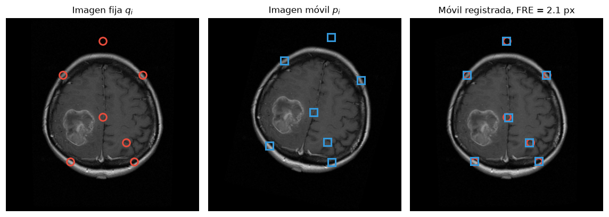
7. Registro basado en superficies
Cuando no hay correspondencias conocidas pero sí una superficie común (aquí el contorno del cerebro), el algoritmo ICP (iterative closest point) las construye: a cada punto del contorno móvil se le asigna el punto más cercano del contorno fijo, se resuelve Kabsch con esas parejas, se aplica la transformación y se repite. Se usan dos contornos de la T1c, el del cerebro y el de la lesión, con la misma desalineación que en el ejemplo de puntos.
def contorno(mascara, paso=3):
borde = mascara & ~morf.erosion(mascara, morf.disk(1))
yy, xx = np.nonzero(borde)
return np.c_[xx, yy][::paso].astype(float)
def icp(P, Q, iteraciones=30):
"""Lleva la nube P sobre la nube Q. Devuelve la matriz acumulada y la
distancia media a Q en cada iteracion."""
arbol = cKDTree(Q)
M = np.eye(3)
P_act = P.copy()
historia = []
for _ in range(iteraciones):
d, idx = arbol.query(P_act)
historia.append(d.mean())
R, t = kabsch(P_act, Q[idx])
M = matriz_de(R, t) @ M
P_act = (R @ P_act.T).T + t
historia.append(arbol.query(P_act)[0].mean())
return M, np.array(historia)
def nube(mascaras, M=None, paso=3):
"""Puntos de los contornos de varias mascaras, transformadas por M."""
puntos = []
for m in mascaras:
mm = m if M is None else (aplicar(m.astype(float), M, orden=0) > 0.5)
puntos.append(contorno(mm, paso))
return np.vstack(puntos)
Q = nube([cerebro, lesion])
P = nube([cerebro, lesion], M_true)
M_icp, hist = icp(P, Q, iteraciones=40)
ang_icp = np.rad2deg(np.arctan2(M_icp[1, 0], M_icp[0, 0]))
print(f"ICP con cerebro y lesión: ángulo {ang_icp:.2f}°, distancia media final "
f"{hist[-1]:.2f} px, error medio en el cerebro "
f"{error_medio(M_icp, M_true, cerebro):.2f} px")
# solo con el contorno del cerebro, casi eliptico, la rotacion queda mal determinada
M_solo, hist_solo = icp(nube([cerebro], M_true), nube([cerebro]), iteraciones=40)
print(f"ICP solo con el cerebro: ángulo {np.rad2deg(np.arctan2(M_solo[1, 0], M_solo[0, 0])):.2f}°, "
f"distancia media final {hist_solo[-1]:.2f} px, error medio "
f"{error_medio(M_solo, M_true, cerebro):.2f} px")
fig, axs = plt.subplots(1, 4, figsize=(12, 3.4))
for k, (ax, it) in enumerate(zip(axs[:3], [0, 3, len(hist) - 1])):
Mk, _ = icp(P, Q, iteraciones=it)
Pk = (Mk @ np.c_[P, np.ones(len(P))].T)[:2].T
ax.plot(Q[:, 0], Q[:, 1], ".", ms=2, c="#e74c3c", label="Contorno fijo")
ax.plot(Pk[:, 0], Pk[:, 1], ".", ms=2, c="#3498db", label="Contorno móvil")
ax.set_aspect("equal")
ax.invert_yaxis()
ax.axis("off")
ax.set_title(f"Iteración {it}")
axs[0].legend(fontsize=8, loc="lower right", markerscale=4)
axs[3].plot(hist, "o-", ms=3)
axs[3].set_xlabel("Iteración")
axs[3].set_ylabel("Distancia media al punto más cercano (px)")
axs[3].set_title("Convergencia")
plt.tight_layout()
guardar(fig, "icp_contornos.png")ICP con cerebro y lesión: ángulo -13.95°, distancia media final 1.10 px, error medio en el cerebro 0.10 px
ICP solo con el cerebro: ángulo -3.68°, distancia media final 4.70 px, error medio 15.38 px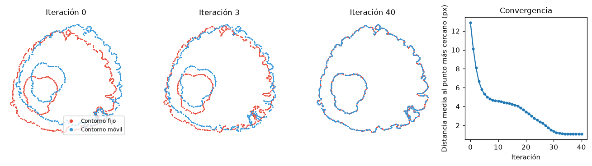
8. Registro basado en intensidad
Sin puntos ni superficies, se compara directamente la intensidad de la imagen fija \(f\) con la de la imagen móvil transformada \(g\) sobre los píxeles donde ambas están definidas.
- Suma de diferencias al cuadrado, \(\mathrm{SSD} = \sum (f - g)^2\). Supone que la misma estructura tiene la misma intensidad en las dos imágenes.
- Correlación normalizada, \(\mathrm{NCC} = \sum (f - \bar f)(g - \bar g) / \sqrt{\sum (f-\bar f)^2 \sum (g - \bar g)^2}\). Tolera un cambio lineal de intensidad.
- Información mutua, \(\mathrm{MI} = H(f) + H(g) - H(f, g)\), con \(H\) la entropía de Shannon del histograma. Sólo supone que la relación entre intensidades es consistente, y por eso sirve entre modalidades distintas.
def solapamiento(f, g, mascara=None):
"""Pixeles donde ambas imagenes estan definidas (g > 0 fuera de la imagen
movil transformada), restringidos a una mascara si se da."""
ok = g > 0 if mascara is None else (mascara & (g > 0))
return f[ok], g[ok]
def ssd(f, g, mascara=None):
a, b = solapamiento(f, g, mascara)
return ((a - b) ** 2).mean()
def ncc(f, g, mascara=None):
a, b = solapamiento(f, g, mascara)
return np.corrcoef(a, b)[0, 1]
def entropia(p):
p = p[p > 0]
return -(p * np.log(p)).sum()
def hist_conjunto(f, g, bins=32, mascara=None):
a, b = solapamiento(f, g, mascara)
h, _, _ = np.histogram2d(a, b, bins=bins, range=[[0, 255], [0, 255]])
return h / h.sum()
def mi(f, g, bins=32, mascara=None):
p = hist_conjunto(f, g, bins, mascara)
return entropia(p.sum(1)) + entropia(p.sum(0)) - entropia(p.ravel())Histograma conjunto
El histograma conjunto de la T1 con contraste y la T2 FLAIR alineadas, calculado dentro de la cabeza, tiene cúmulos definidos, porque cada tejido ocupa una zona propia en ambas modalidades. Al desalinear, los cúmulos se dispersan y la información mutua baja. La relación entre modalidades no es lineal ni monótona, y por eso la SSD y la correlación no son medidas adecuadas en este caso.
cabeza = ndi.binary_fill_holes(t1c > 10)
mov_des = aplicar(flair, T_rigida(10, 15, 0, flair.shape))
fig, axs = plt.subplots(1, 4, figsize=(12.5, 3.3))
axs[0].imshow(t1c, cmap="gray")
axs[0].set_title("T1 con contraste (fija)")
axs[1].imshow(flair, cmap="gray")
axs[1].set_title("T2 FLAIR (móvil)")
for ax in axs[:2]:
ax.axis("off")
for ax, g, tit in zip(axs[2:], [flair, mov_des], ["alineadas", "desalineadas 10°, 15 px"]):
h = hist_conjunto(t1c, g, 64, cabeza)
ax.imshow(np.log1p(h * 1e4).T, origin="lower", cmap="magma",
extent=[0, 255, 0, 255])
ax.set_title(f"Histograma conjunto, {tit}\nMI = {mi(t1c, g, 64, cabeza):.2f} nats")
ax.set_xlabel("Intensidad T1c")
ax.set_ylabel("Intensidad FLAIR")
plt.tight_layout()
guardar(fig, "histograma_conjunto.png")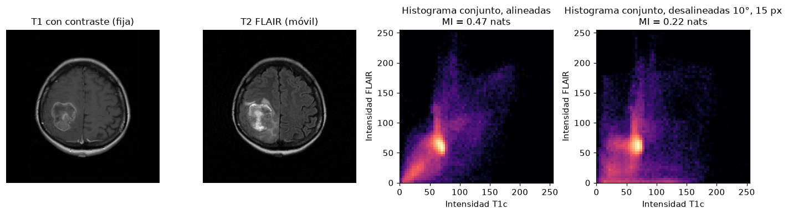
9. Optimización y multirresolución
El registro es un problema de optimización sobre los parámetros \(\mathbf m\) de la transformación: \(\hat{\mathbf m} = \arg\max_{\mathbf m} \mathrm{MI}(f, g\circ T_{\mathbf m}^{-1})\). Cada evaluación de la función objetivo exige remuestrear la imagen móvil completa. Suavizar y submuestrear las imágenes hace cada evaluación mucho más barata (64 veces con un factor 8), elimina los detalles finos que producen óptimos locales y permite partir de una solución gruesa que después se refina a resolución completa. El paisaje muestra la información mutua en función del ángulo y de la traslación horizontal para una FLAIR desalineada 10 grados y 15 píxeles; la cruz marca la corrección exacta.
def piramide(img, factor, sigma=None):
sigma = factor / 2 if sigma is None else sigma
s = ndi.gaussian_filter(img, sigma) if sigma > 0 else img
return s[::factor, ::factor]
def objetivo(params, fija, movil_i, forma):
ang, tx, ty = params
g = aplicar(movil_i, T_rigida(ang, tx, ty, forma))
return -mi(fija, g)
angs = np.linspace(-40, 40, 41)
txs = np.linspace(-80, 80, 41)
fig, axs = plt.subplots(1, 2, figsize=(10, 4))
for ax, factor in zip(axs, [1, 8]):
f_k = piramide(t1c, factor)
m_k = piramide(mov_des, factor)
Z = np.array([[-objetivo((a, tx / factor, 0), f_k, m_k, f_k.shape)
for tx in txs] for a in angs])
im = ax.contourf(txs, angs, Z, 30, cmap="viridis")
ax.plot(-15, -10, "r+", ms=14, mew=2)
ax.set_xlabel("$t_x$ (px, resolución completa)")
ax.set_ylabel("Ángulo (grados)")
ax.set_title(f"Información mutua, submuestreo ×{factor}")
plt.colorbar(im, ax=ax, shrink=0.85)
plt.tight_layout()
guardar(fig, "paisaje_costo.png")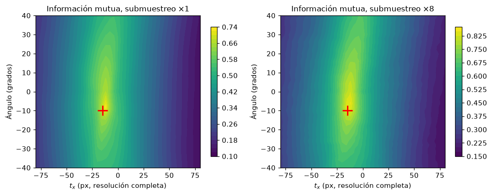
def registrar_rigido(fija, movil_i, niveles=(4, 2, 1), x0=(0, 0, 0)):
x = np.array(x0, float)
trayectoria = []
for factor in niveles:
f_k = piramide(fija, factor)
m_k = piramide(movil_i, factor)
xk = np.array([x[0], x[1] / factor, x[2] / factor])
res = minimize(objetivo, xk, args=(f_k, m_k, f_k.shape), method="Powell",
options={"xtol": 0.05, "ftol": 1e-4, "maxfev": 400})
x = np.array([res.x[0], res.x[1] * factor, res.x[2] * factor])
trayectoria.append((factor, x.copy(), -res.fun, res.nfev))
return x, trayectoria
def informe(tray):
for factor, x, valor, nfev in tray:
print(f" nivel ×{factor}: ángulo {x[0]:6.2f}°, t = ({x[1]:6.1f}, {x[2]:6.1f}), "
f"MI = {valor:.3f}, {nfev} evaluaciones")Corrección residual de la FLAIR original
Las tres secuencias del caso vienen alineadas por el escáner, pero el paciente puede moverse entre adquisiciones. Al registrar la T2 FLAIR original sobre la T1 con contraste se obtiene una corrección pequeña pero no nula, que se aplica antes de los experimentos siguientes.
# Paso 1: la FLAIR original sobre la T1c
res0, tray0 = registrar_rigido(t1c, flair)
informe(tray0)
flair_c = aplicar(flair, T_rigida(*res0, flair.shape))
print(f" corrección residual: {res0[0]:.2f}°, ({res0[1]:.1f}, {res0[2]:.1f}) px; "
f"MI {mi(t1c, flair):.3f} -> {mi(t1c, flair_c):.3f}") nivel ×4: ángulo 0.66°, t = ( 1.9, 1.5), MI = 0.854, 191 evaluaciones
nivel ×2: ángulo 1.16°, t = ( 2.1, 0.2), MI = 0.789, 194 evaluaciones
nivel ×1: ángulo 0.82°, t = ( 2.3, 0.2), MI = 0.743, 56 evaluaciones
corrección residual: 0.82°, (2.3, 0.2) px; MI 0.708 -> 0.736Las tres medidas frente a un desplazamiento
Se desplaza la imagen móvil horizontalmente entre \(-30\) y \(30\) píxeles y se evalúa cada medida dentro de la máscara de cerebro de la imagen fija, donde están los tejidos que interesa alinear. Se usa la FLAIR corregida del paso anterior, de modo que el desplazamiento cero es la alineación correcta. En el caso monomodal (T1c contra sí misma con ruido) las tres medidas tienen su óptimo en cero. En el caso multimodal (T1c contra FLAIR) la SSD y la correlación tienen su óptimo desplazado, porque la relación entre intensidades no es lineal; la información mutua conserva el máximo en cero.
rng = np.random.default_rng(0)
t1c_ruido = np.clip(t1c + rng.normal(0, 12, t1c.shape), 0, 255)
desp = np.arange(-30, 31, 1)
interior = ndi.binary_erosion(cerebro, iterations=3)
casos = {"Monomodal: T1c frente a T1c con ruido": t1c_ruido,
"Multimodal: T1c frente a T2 FLAIR": flair_c}
fig, axs = plt.subplots(2, 3, figsize=(11, 5.6))
for fila, (titulo, movil_i) in enumerate(casos.items()):
curvas = {"SSD": [], "NCC": [], "MI": []}
for d in desp:
g = aplicar(movil_i, T_traslacion(d, 0))
curvas["SSD"].append(ssd(t1c, g, interior))
curvas["NCC"].append(ncc(t1c, g, interior))
curvas["MI"].append(mi(t1c, g, 32, interior))
for ax, (nombre, c) in zip(axs[fila], curvas.items()):
ax.plot(desp, c)
ax.axvline(0, color="gray", ls=":")
ax.set_title(f"{nombre}, {titulo.split(':')[0].lower()}")
ax.set_xlabel("Desplazamiento horizontal (px)")
k = int(np.argmin(c)) if nombre == "SSD" else int(np.argmax(c))
ax.plot(desp[k], c[k], "o", c="#e74c3c")
print(f"{titulo.split(':')[0]:10s} {nombre}: óptimo en {desp[k]:+d} px")
plt.tight_layout()
guardar(fig, "metricas_vs_desplazamiento.png")Monomodal SSD: óptimo en +0 px
Monomodal NCC: óptimo en +0 px
Monomodal MI: óptimo en +0 px
Multimodal SSD: óptimo en +2 px
Multimodal NCC: óptimo en +3 px
Multimodal MI: óptimo en +1 px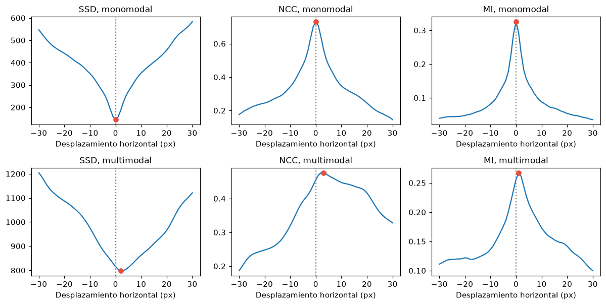
10. Aplicación: registro rígido multimodal
La FLAIR corregida se desalinea con una transformación rígida conocida (rotación de 12 grados y traslación de 18 y \(-10\) píxeles) y se registra sobre la T1 con contraste maximizando la información mutua con el método de Powell en tres niveles de resolución. La transformación conocida permite medir el error del método.
# Paso 2: desalineacion conocida sobre la FLAIR corregida
verdad = (12.0, 18.0, -10.0)
M_true_f = T_rigida(*verdad, flair.shape)
movil_f = aplicar(flair_c, M_true_f)
est, tray = registrar_rigido(t1c, movil_f)
informe(tray)
M_est_f = T_rigida(*est, flair.shape)
registrada_f = aplicar(movil_f, M_est_f)
print(f" desalineación aplicada {verdad}; corrección estimada "
f"({est[0]:.2f}°, {est[1]:.1f}, {est[2]:.1f}); error medio en el cerebro "
f"{error_medio(M_est_f, M_true_f, cerebro):.2f} px")
print(f" MI antes {mi(t1c, movil_f):.3f}, después {mi(t1c, registrada_f):.3f}")
def tablero(a, b, n=8):
"""Tablero de ajedrez que alterna bloques de a y de b."""
h, w = a.shape
yy, xx = np.mgrid[0:h, 0:w]
cuadros = ((yy * n // h) + (xx * n // w)) % 2 == 0
return np.where(cuadros, a, b)
fig, axs = mostrar([t1c, movil_f, tablero(t1c, movil_f), registrada_f,
tablero(t1c, registrada_f)],
["Fija, T1c", "Móvil, FLAIR desalineada", "Tablero antes",
"FLAIR registrada", "Tablero después"],
ncol=5, ancho=2.5, vmin=0, vmax=255,
nombre="ej_registro_rigido.png") nivel ×4: ángulo -12.17°, t = ( -16.1, 15.4), MI = 0.891, 176 evaluaciones
nivel ×2: ángulo -12.02°, t = ( -15.9, 13.8), MI = 0.829, 154 evaluaciones
nivel ×1: ángulo -11.85°, t = ( -15.7, 13.2), MI = 0.787, 110 evaluaciones
desalineación aplicada (12.0, 18.0, -10.0); corrección estimada (-11.85°, -15.7, 13.2); error medio en el cerebro 0.40 px
MI antes 0.464, después 0.779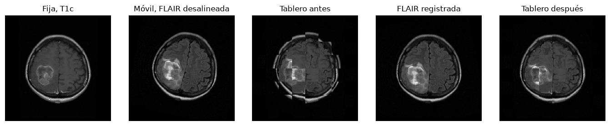
El tablero alterna bloques de las dos imágenes; en el registro correcto los contornos del cráneo y de los ventrículos continúan de un bloque al siguiente. La figura siguiente superpone el contorno de la lesión obtenido en la T1c sobre la FLAIR antes y después del registro.
fig, axs = plt.subplots(1, 3, figsize=(10.5, 3.7))
for ax, im, tit in zip(axs, [t1c, movil_f, registrada_f],
["T1c con el contorno de la lesión",
"FLAIR antes del registro", "FLAIR después del registro"]):
ax.imshow(im, cmap="gray", vmin=0, vmax=255)
ax.contour(lesion, levels=[0.5], colors="#e74c3c", linewidths=1.2)
ax.set_xlim(200, 420)
ax.set_ylim(420, 200)
ax.axis("off")
ax.set_title(tit)
plt.tight_layout()
guardar(fig, "ej_registro_contorno.png")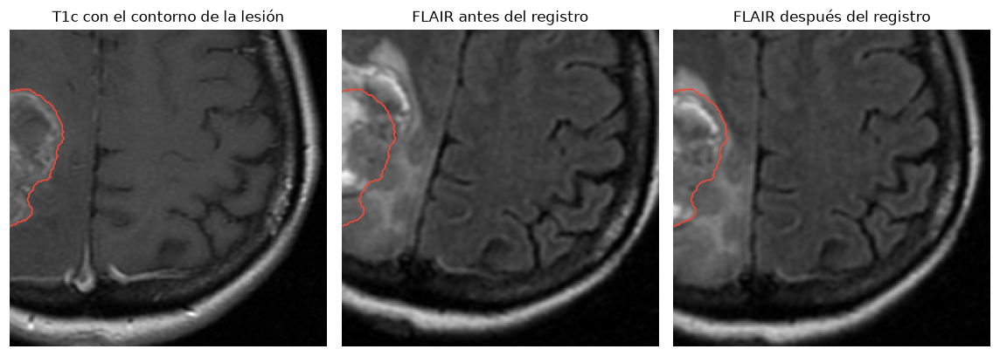
Síntesis esquemática
- Una transformación geométrica mueve coordenadas; la intensidad de cada píxel de salida se obtiene por mapeo inverso e interpolación.
- En coordenadas homogéneas las transformaciones afines son matrices y la composición es un producto, en el que el orden cambia el resultado.
- Las transformaciones no rígidas asignan un desplazamiento a cada píxel y exigen suavidad.
- El registro combina un modelo de transformación, una medida de similitud y un optimizador; con puntos correspondientes la solución es cerrada, con superficies se itera (ICP) y con intensidades se optimiza una medida.
- La información mutua es la medida adecuada entre modalidades, y la estrategia multirresolución evita los óptimos locales.